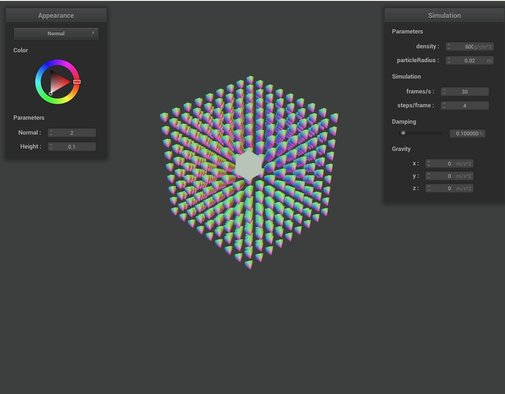
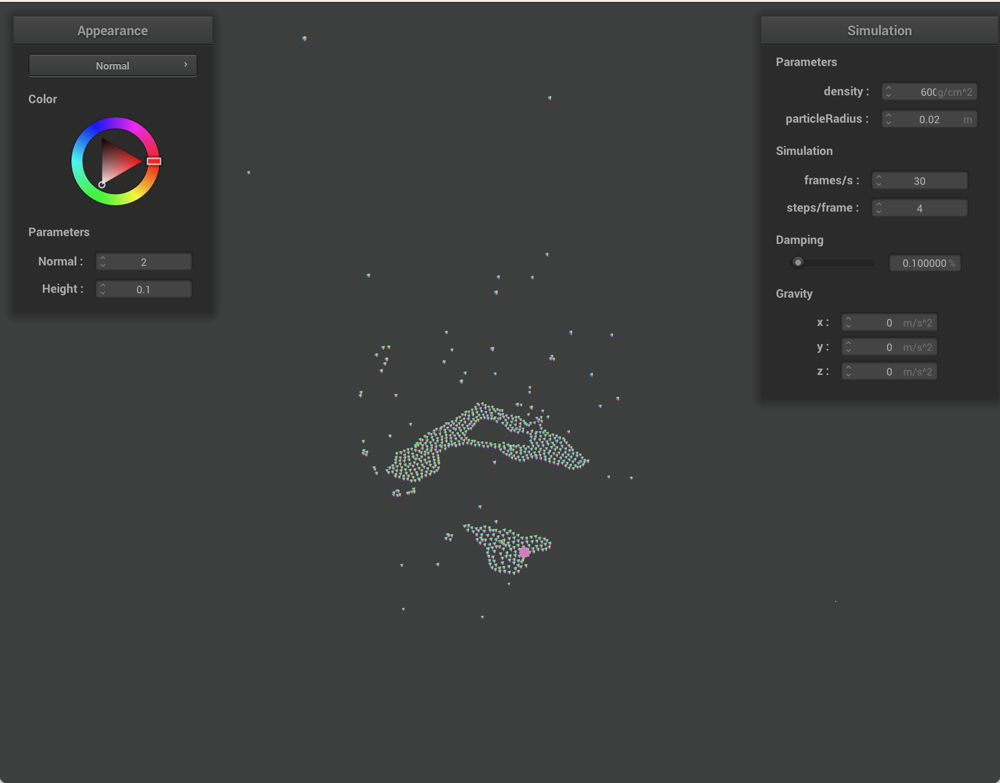
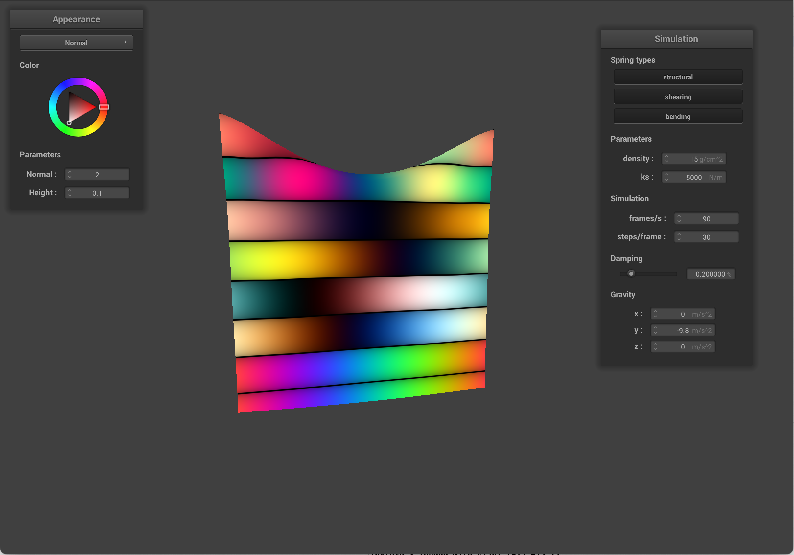
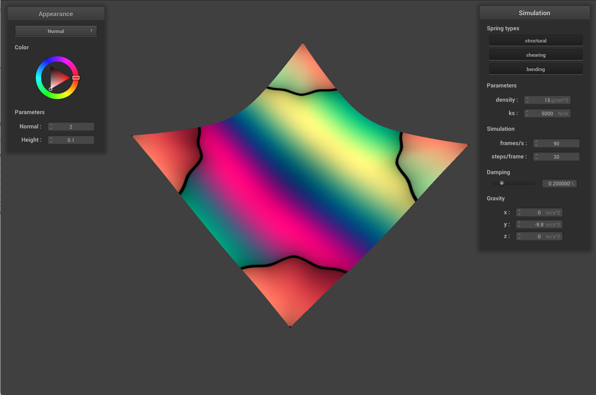
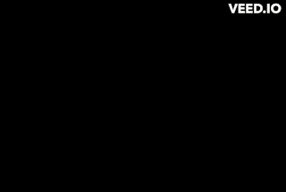
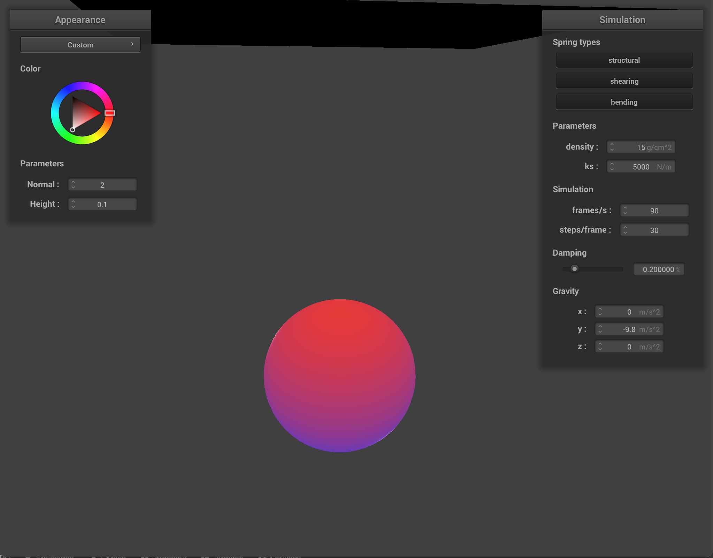
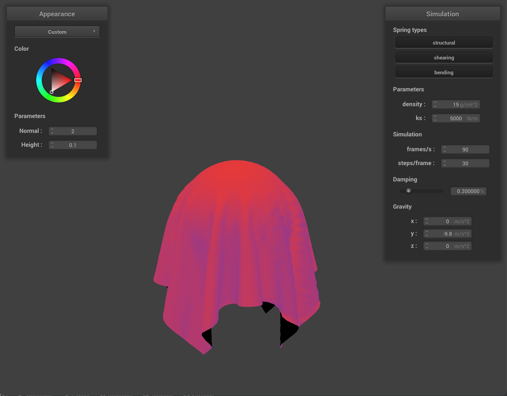

Our original idea for our final project was to create a simulation of melting materials building off our project 4 codebase. We were able to get a simple fluid simulation working and showing up in our GUI for project 4 using the Position Based Fluids algorithm, but we were unable to get it to look like actual water, which would be problematic for us later down the road because in addition to fluids, we also needed to implement heat transfer and phase changes for melting materials, which are all very dependent on having a good visual representation. We also realized we can’t rely on our project 4 code base as we originally intended to and the majority of resources we found on the internet on implementing fluid and melting simulation required the use of applications such as CUDA and using GPUs, which we don’t have access to.
|

|

|
We also realized the scale of our project was much bigger than we initially anticipated and so after consulting with staff, we have decided to pivot to another project. Our new project idea is to implement shaders for non-photorealistic rendering since we are generally interested in simulation and materials shading. To get better acquainted with non-photorealistic shading, we are currently looking into Gooch Shading and Cosine Based Palette Shading.
Here are some images from each type of shading so far:
|

|

|
|

|
Cosine Based Palette Shading allows us to add color variation to an object which we implemented using the cosine equation:
color(t) = a + b * cos(2*pi*(c*t+d))
Where t is the normalized palette index or domain, c is the number of times cosine oscillates, d is the phase, and where a, b, c, and d are RGB 3D vectors.
Palette Shading is interesting because it is dependent on the positions of x and y. Notice how as the cloth is falling down, it changes colors.
The cosine based method is more efficient compared to other methods of palette shading such as by using linear interpolation or triangle waves.
|

|

|
Gooch Shading gives the appearance of a "cool to warm" shading effect. The warm colors typically indicate surfaces are facing toward the light source, while cool colors represent surfaces facing away from the light source.
We implemented Gooch Shading in two passes where first all objects in the scene are drawn with the "cool to warm" shading, then secondly the object’s edges are rendered in black. The benefit of Gooch Shading is that it allows shading to occur in mid-tones to preserve visual prominence of edge lines and highlights, which is helpful for the non-photorealistic look we want to go for in our shaders.
Our group has been faced with a setback. We discovered our original project proposal for melting simulation was too ambitious with the given time we had in the sense that there were more moving parts than we initially anticipated. For example, once we figured out how to modify our project 4 code base to support particle-based fluids, we realized we also needed to implement heat transfer and implement phase changes which we found out would require us to largely start from scratch rather than being able to use our project 4 code. Our new plan is to implement shaders for non-photorealistic rendering. We are currently looking into Gooch Shading and cosine based palette shading. Relative to our new plan, we feel we are mostly on track despite having our setback for our first project idea. With careful planning, we believe we can get our project done on time and we also have a better idea now of specific steps we need to take.
4/24-4/30
5/1-5/4